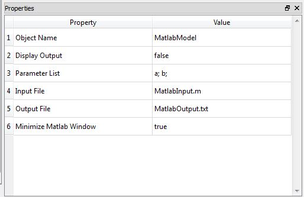
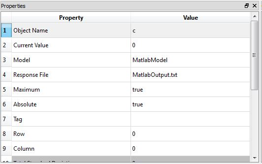

MATLAB Model
Class Name
Location in Objects Pane
- Models > Model > External Software > MATLAB
Model Description
Model Form
- For users who have MATLAB installed on the computer, this model allows parameters to be given to MATLAB and results to be returned to Rt.
DDM sensitivities

Properties
Object Name
- Name of the object in Rt
- Allowable characters are upper-case and lower-case letters, numbers, and underscore (“_”).
- The name is unique and case-sensitive.
Display Output
- Determines whether the model is allowed to print messages to the Output Pane.
Parameter List
- List of the parameters that should be mapped into the MATLAB model.
- Absolute or relative path to the location of the MATLAB input file, for example:
C:/mystructure.inp
Output File
- Absolute or relative path to the location of the MATLAB output file, for example:
C:/mystructure.out
Minimize MATLAB Window
- Determines whether to minimize MATLAB window.
Hint:
Note that since Rtx does not ask for the path to the MATLAB executive file, it is required to this file is placed in the same folder as Rt's executive file.
Output
- This model does not automatically create any response objects.
- Rather, creates File Response objects.
- In those objects, specify the name of the MATLAB and the name of the file where MATLAB puts the response.
Right-click Menu
Remove
Example
- Function c is defined in MATLAB by the following expression:
$$c = 2a + b$$
- a is a normal random variable with mean 1 and stdv 1. b is also a normal random variable with mean 2 and stdv 3.
- Assume the function c is the limit-state function and calculate the probability of failure.
solution
- To execute an input file in MATLAB and use its results in Rt, one can use following procedure:
- To run MATLAB successfully it is necessary to have a copy of MATLAB.exe file in the same directory as Rtx input file and MATLAB output file.
- To import the results and use them in Rtx analyses, one can create a File Response object. For more information, you can check File Response.

- Finally, a proper Limit State Function should be defined to evaluate failure probability and reliability index, using MATLAB results:
- Before running the analyses, it is recommend to check whether Rtx and MATLAB are well-connected, using Function Evaluation Analyzer.